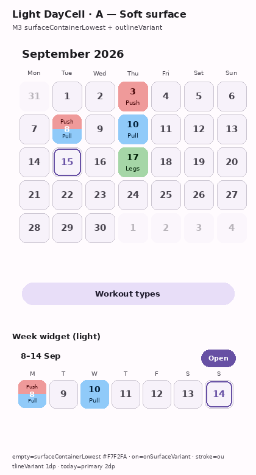
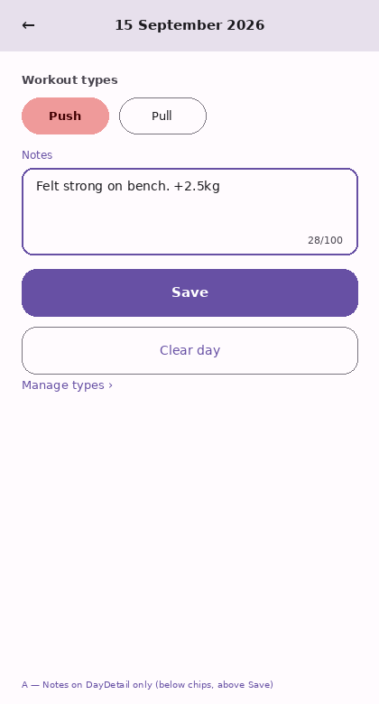
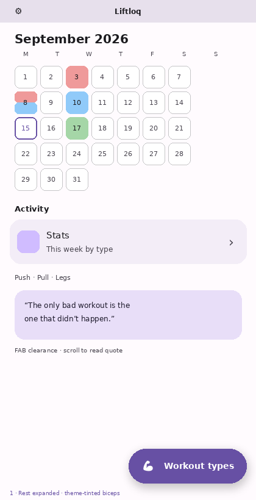
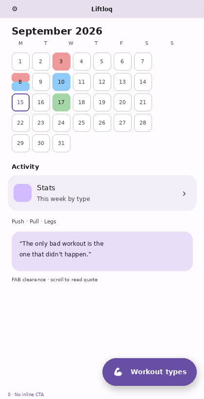
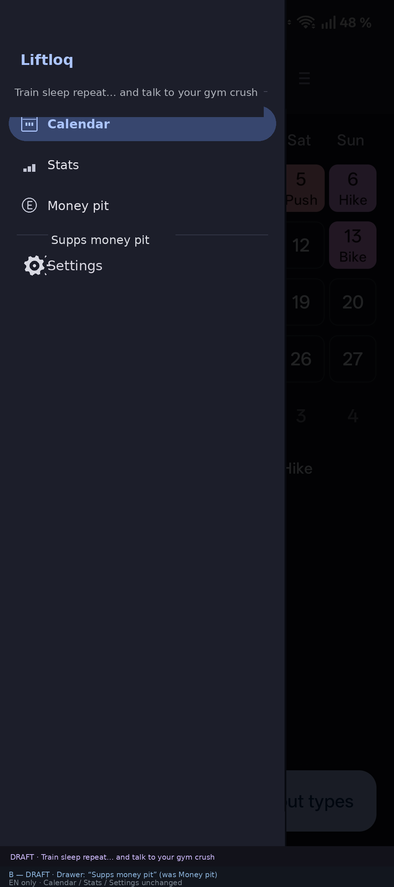
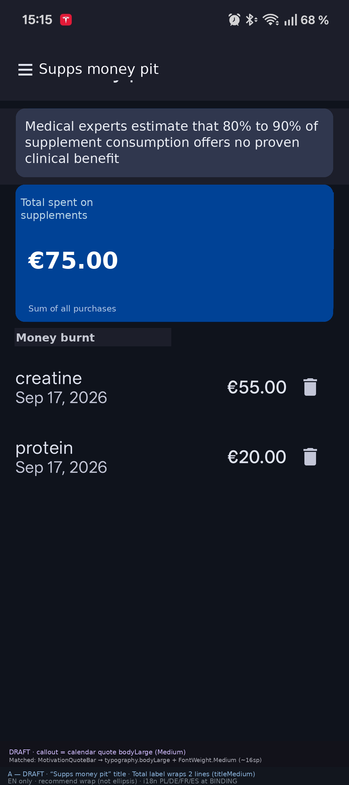
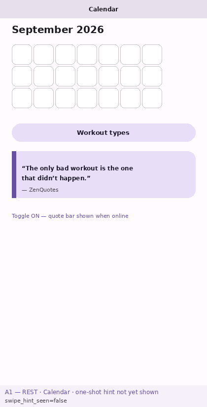

Local workout calendar · No account required
Screens shown are design comps matching current UI (1.2.x); device photos may replace them later.
Liftloq keeps your workout plan on your device. Mark days on the calendar, manage workout types, and optionally track supplement spending — without signing in.
1. Mark a workout on the calendar
Open Calendar (home).
Tap a day → pick a workout type (up to two per day when supported).
The day cell shows the type color and label.

Calendar day cells show each workout type’s color and label. A split cell means two types on the same day.

Day screen: select type chips (for example Push), add an optional note, then Save.
2. Add and remove workout types
From Calendar, tap the Workout types button (FAB), or use Manage types on a day screen.
Add: tap the add (+) control → enter a name and pick a color.
Remove: delete a type from the list (workouts of that type leave the calendar).

Calendar with the Workout types FAB — open it to manage your type list.

Same entry point at rest: Workout types stays available while you browse the month.
3. Track supplements (Supps money pit)
Open the navigation drawer → Supps money pit.
Add a purchase (name, price, date). Currency comes from Settings.
See Total spent on supplements and the Money burnt list.

Drawer entry: Supps money pit (alongside Calendar, Stats, and Settings).

Supps money pit: total spent on supplements plus the Money burnt purchase list.
Tip: Swipe left on Calendar to cycle Calendar → Stats → Supps money pit (then back to Calendar).

Optional first-run edge peek on Calendar — a hint that left-swipe reaches Stats and beyond.